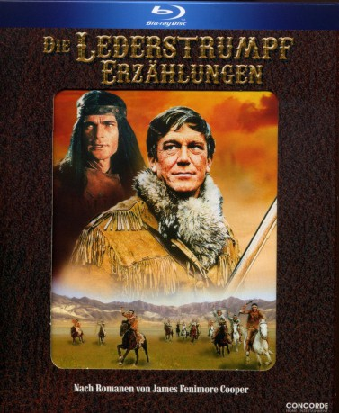

")
Alternativ: The Leatherstocking Tales (Englischer Titel)
 
 IMDB-Wertung: 6.9 / 10
IMDB-Wertung: 6.9 / 10  Metascore:
Metascore: 
Nat (Hellmut Lange) hat das Tal seiner Heimat verlassen und will in grenzenloser Freiheit leben. Bei einem Zusammenstoß mit den Mohikanern kommt Lederstrumpf, so nennen ihn die Indianer, an den Marterpfahl.Millionen Zuschauerherzen werden höher schlagen, wenn während der Feiertage die Abenteuer des Lederstrumpfs über die Bildschirme flimmern. Nur einer wird diese Indianergeschichte mit gemischten Gefühlen betrachten: Hellmut Lange, der schon als kleiner Junge diese Wild-West-Story des 18. Jahrhunderts buchstäblich verschlang.„Nichts gegen mein Kinderbuch, aber nach den Erfahrungen, die ich bei den Dreharbeiten in Rumänien machte, könnte ich diese Kapitel eigentlich nur so überschreiben: Nie wieder Lederstrumpf!Ich bin bestimmt kein weicher Bursche, doch was ich bei diesen Aufnahmen erlebte, widerfuhr mir nicht einmal bei den Mammutserien „John Kling“ oder „Salto Mortale“.Wochenlang gab es kein warmes Essen. Die Hotelzimmer waren eiskalt und naß. Ich habe heute noch Rheuma, weil meine Lederstrumpfstiefel nicht imprägniert waren und sich im Laufe des Tages mit Wasser füllten. Warme Wäsche mußte ich mir in München besorgen lassen. Sogar das Schießen wurde zu einem Kunststück. Von sechs Platzpatronen ging nicht eine los, weil sie feucht waren.Bei den stundenlangen Proben mit den schweren Packsätteln handelte ich mir eine Zerrung ein, die mir so viel Schmerzen bereitete, daß ich eine ganze Nacht lang weinte, am anderen Morgen auf den Knien zum Telefon kroch und mich anschließend im Flugzeug nach Hause bringen lassen mußte.“ (Text: Funk Uhr 51/1969, S.11)
Jahr: 1969
Dauer: 87 Minuten
FSK:
Land: West-Deutschland Studio: ZDFTonspuren:
Untertitel:
Auflösung: 1080p (1440x1080) Größe: 7813 MB
Genre: Abenteuer, Western, TV-Serie
Regisseur: Jean Dréville, Pierre Gaspard-Huit, Sergiu Nicolaescu
Drehbuch: Deropa Films
Soundtrack:
Darsteller:
 Christian Wolff als Major Duncan Heyward
Christian Wolff als Major Duncan HeywardDatei: X:\HD-Western-Collections\Lederstrumperzählungen, Die\Die Lederstrumpferzählungen Teil1 Der Wildtöter.mkv seit 16.10.2017
Festplatte: HD Eastern+Western
 Alle Filme aus Gruppe 'HD-Western-Collections\Lederstrumperzählungen, Die'
Alle Filme aus Gruppe 'HD-Western-Collections\Lederstrumperzählungen, Die'